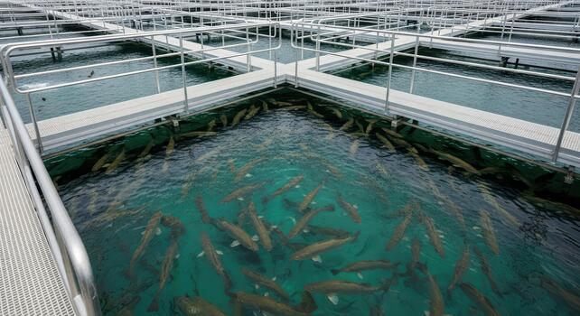

Publisher: Taylor & Francis Group
This book explores how intelligent and emerging technologies are transforming aquaculture into sustainable, efficient, and data-driven systems. It focuses on Artificial Intelligence (AI), Internet of Things (IoT), and quantum-inspired computing to address challenges such as real-time water quality monitoring, fish health management, feeding optimization, environmental sustainability, and climate resilience.
Vignan’s Institute of Technology & Science for Women
Guntur, India
NIT Raipur, India
College of Fishery Science, Pebbair, Wanaparthy, India
National University, Indonesia
📄 Chapter Length: 15–20 pages (7000–8000 words)
❌ No publication charges
📧 Email: callforbookchapters@gmail.com
🔗 Submission Form:
Click here
Scan to submit your chapter